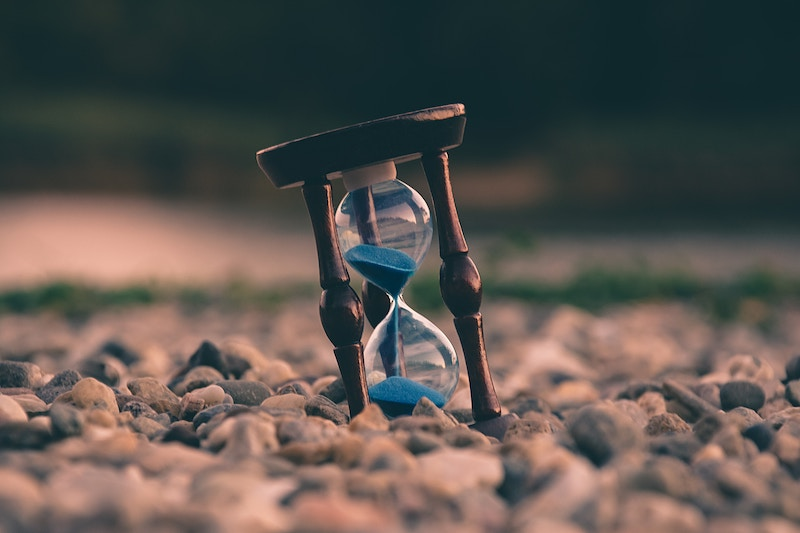
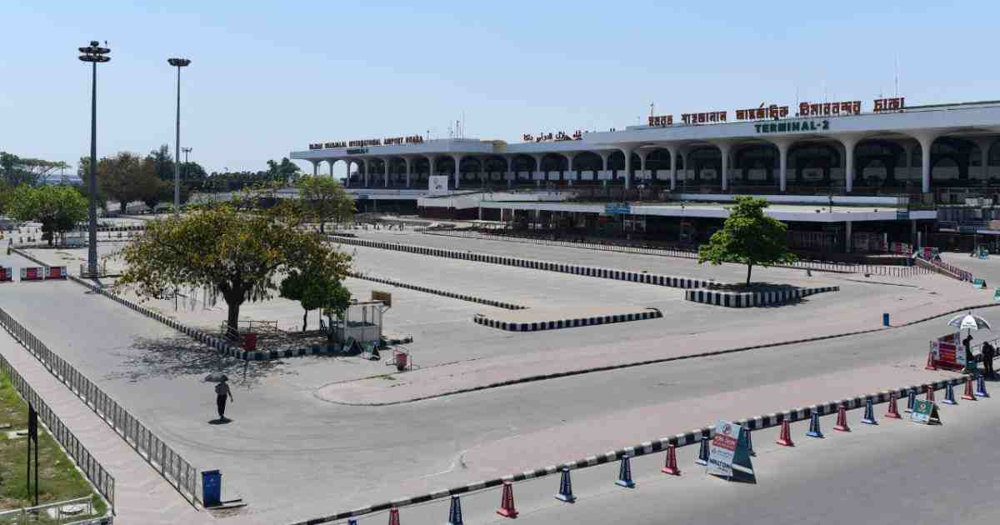

History:
I have spent most of my childhood in Bangladesh (12 years). Bangladesh is a very festive country. Though there is a lot of people, traffic, crowd and chaos, it is a very lovely place. My family, friends and relatives have made my childhood very memorable.
Past Facts:
I have done many activities in the past. Participated in many programs and found new hobbies. As time went by, I stopped doing the things I did. People change, I changed so my hobbies changed as well. I don't regret or miss any moments since as time goes by I know change will occur.
Things I did in the past (in Bangladesh):
- Singing (5 years) (I was in a music school)
- Dancing (3 years) (I started dancing again but not in any schools; just by myself)
- Sketching (2 years) (I was in an art school)
- Played the piano (3 years) (My neighbour taught me)
- Karate (6 years) (I was in a karate school)


Past Stories:
The following are 2 of my childhood memories. They are very short but very memorable. You can take a look at them.
A Long Trip
My family, my dad's friend and his family, my cousin and her parents, my grandparents and I (basically a lot of people) went on a long trip to Sajek, Bangladesh (picture below). It was basically another city. It was very fun. I can't really tell the whole story since it's too long however, I'm going to share some parts. The day we were arriving at Sajek... It was very sunny like very very sunny and with Bangladesh's hot temperature, everyone was sweating (*already disgusted*). So, no one expected the cold and chilly weather of Sajek. We were like freezing when we had to go up the hill. Sajek is like a hill (kind of). It's like a city or village on top of the hill. The most surprising (best) part of Sajek was its cloud touching sky. Like no joke, I was surprised to know you could actually like "touch" the clouds. Anyways, we are going up the hill (freezing) and finally made it through. The village was... so beautiful. I was very shocked with the scenery. It was very bright with flower gardens like everywhere. Oh also, it was in 2017. So, the place was very magnificant however, the cottage was... not very nice. Moving on, the next day we all went hiking or basically touring around the area, seeing many shops, small stores, monuments, etc. Suddenly, my cousin started having so breathing difficulties, that's the time when I learned, the higher you go, the harder it is to breathe. Poor her, the trip didn't really go very well for her. The next day, I remember, we woke up soo early just to try feeling the clouds. Everyone woke up (except me of course), I kept sleeping (very lazy). However, the pictures I saw were very very surprising, it was so beautiful (*wishing the pics were still there*) After 4 days of staying there, it was time to go back home. Ah, it was so sad. I didn't know I was going to enjoy so much. One day, I hope to visit Sajek again. It was just soo memorable. This was just a very short story of the trip.

Goodbyes
How does a goodbye feel? Mostly it feels sad, and it did. It was time for my family and me to come here to Canada. Leaving everyone back home was not very peaceful as everyday for a few weeks, I kept thinking about my friends and relatives in Bangladesh. This is a very short story of the last few moments in the airport before checking in for the main departure. You (might not) believe me but there were more than 10 people just to see us off. That's when the fact hit me that I was leaving so many people behind and going to another country where I know no one. Like normal people, everyone was just crying. I really didn't know what to say so I just stared (at everyone). Moments went by so fast. Last face-to-face conversations. Last pictures. Last hugs. Last real goodbyes. Ah, moments were slipping by so fast without giving me the chance to realize the situation. My family and I flew here. Canada... seemed VERY different at first (of cousre). I still couldn't process the fact that I left Bangladesh (my slow brain). When we reached home, I suddenly started crying (didn't know why). The tears just kept falling. Days went by, still those memories clearly float infront of my eyes. Sometimes wishing to rewind time. But, hm, in the end, Life Goes On! A very very very short situation but I'm glad I could at least share something about my past.
I have a lot of interesting stories of my childhood, just not describable. I added the stories I could clearly remember. I hope you liked it. You'll find more information on the other pages.
Link to other pages:
| Links |
|---|
| Home Page |
| My Current Lifestyle |
| My Hobbies |
| My Likes & Dislikes |
| Sources: pictures and other information |
Click here to jump to the top of this page.